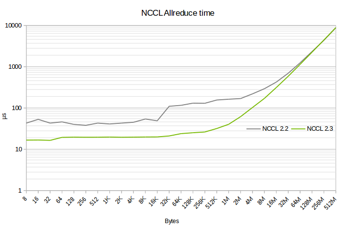

NCCL-3 : Direct algorithms
Testing
$CONTENTS
Objectives and Timeline
Code Coverage Goal Defined
None.
KPI Coverage Goals Defined (performance, stress, stability, throughput, latency)
Performance on 16 GPUs on DGX2 should be 5x better on medium sizes (32K-512K) compared
to NCCL 2.2 then the difference should decrease progressively down to no less
than 0.95x.

That only concerns the allReduce, reduceScatter and allGather operations on 16 GPUs.
Other cases should not be worse than 0.95 the performance of NCCL 2.2
Requirement Coverage Goal Defined
Quality Thresholds Defined
No error.
Test Timeline
Usual NCCL tests.
SW Verification and Test Plan
Usual NCCL tests.
Test plan
Requirements Tests
Usual NCCL tests.
Interface Tests
No change.
Fault-injection Tests
None.
Resource Usage Tests
None.
Design Coverage Testing
None.
Boundary Tests
None.
Certification Tests
None.
Stress Tests
None.
Stability Tests
None.
Perf and Power KPI Tests
None.
Usability & OOBE Tests
None.
Manufacturing Diagnostic(Factory) Tests
None.
Signoff list
Author : Sylvain Jeaugey